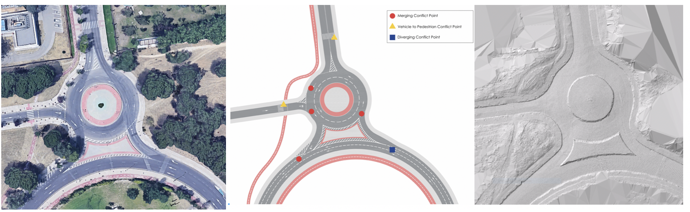
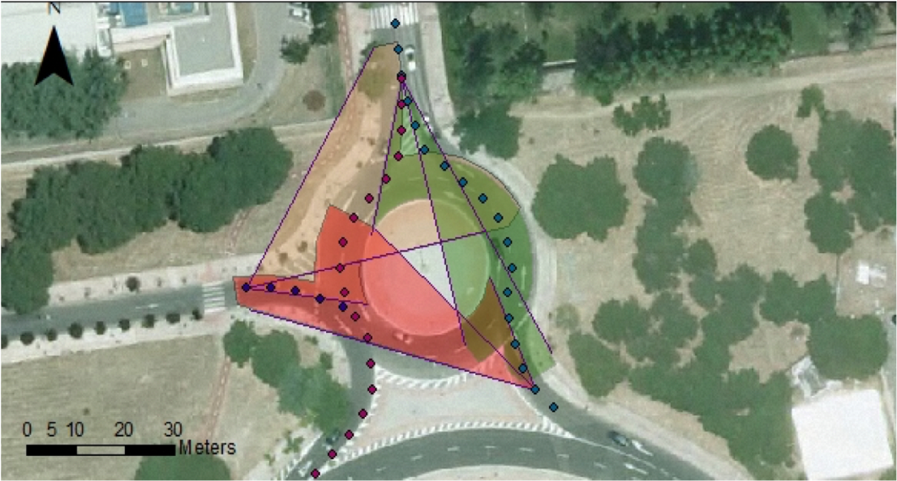

Safe circulation of vulnerable road users

Road elements are predominantly designed to safely accommodate motorized users. Urban roads and streets, unlike highways, contain very dissimilar users and might have higher points of conflict. Nowadays, due to the increasing use of vehicle sharing systems, personal ransportation devices and bicycle-friendly policies, some urban streets have had to adapt to distinct users with different levels of vulnerability. Given the interest in increasing the use of alternative transportation methods, it is of great importance to make sure these car-centered designed roads provide securely for all users. In order to create a safe environment for these unalike users, common measures such as reducing speed limits, traffic calming interventions and modifications to the road geometry have been taken in several urban areas. In this regard, taking into account the key role that proper available sight distance plays in road safety, the visibility of an urban roundabout located in Madrid, Spain was evaluated. This analysis was performed considering the observers to be pedestrians, cyclists and electric scooter riders. In addition to the estimation of their crossing and stopping sight distances, their reciprocal visibility with drivers was assessed. Nowadays there are different ways of obtaining upto-date information of the road scene and cycle lanes with sufficient accuracy and detail, hence it is possible to easily perform offsite analyses of distinct road parameters. Here, the virtual verification of sufficient stopping and intersection sight distances was performed utilizing a LiDAR derived digital terrain model and 3-D geometries. These evaluations were performed with the objective of identifying potential risk locations for these vulnerable users and the proposal of measures that could improve their safety.
This work was published in Transportation Research Procedia. It can be viewed here:.

The estimation allowed to identify distinct elements that could decrease the safety of the case study. Firstly, the evaluated roundabout showed restricted sight distances on the approaches for the VRU. As stated in the guidelines, controlling the approach visibility could encourage drivers to slow their speed. However, the impact of this limitation on users other than drivers could alter the overall roundabout functioning. As previously mentioned, some aspects of the geometric layout of roundabouts that enhance their safety for motorized users have negative impacts on VRU. In the first turn, the visibility is impacted by vegetation rather than the roundabout geometry and drivers were provisioned for SSD but VRU sharing the lane were not. Furthermore, cyclists riding near the sidewalk were not able to spot approaching drivers at the minor road entry. With the growing amount of VRU in these settings the combined visibility diagram should be obtained considering observers other than drivers and the lateral clearance should be assured. The elaboration of combined diagrams is easier for new signs or roads whose information is digitized and updated.